Volkswagen Passat 2.0 TSI 4Mot Elegance DSG
125000 PLN
93 000 km
VOLKSWAGEN PASSAT – Przestronne i komfortowe kombi z 2020 roku, idealne dla rodzin oraz osób ceniących wygodę i nowoczesne technologie. Model ten wyróżnia się bogatym wyposażeniem oraz wysokim poziomem bezpieczeństwa. Auto posiada napęd na cztery koła oraz automatyczną skrzynię biegów.
- Wersja: ver-2-0-tsi-4mot-elegance-dsg
- 5 drzwi, 5 miejsc
- Adaptacyjny tempomat
- Automatyczna klimatyzacja dwustrefowa
- Podgrzewane fotele przednie
- System bezkluczykowy (Keyless Go)
- Systemy wspomagania: asystent pasa ruchu, czujniki parkowania przód/tył
- LED-owe światła do jazdy dziennej i reflektory
- Skórzana tapicerka i wielofunkcyjna kierownica
- Bluetooth, radio, system nagłośnienia, USB, ekran dotykowy
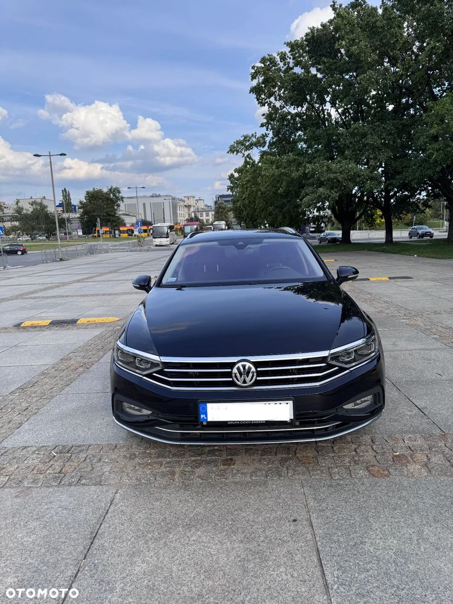
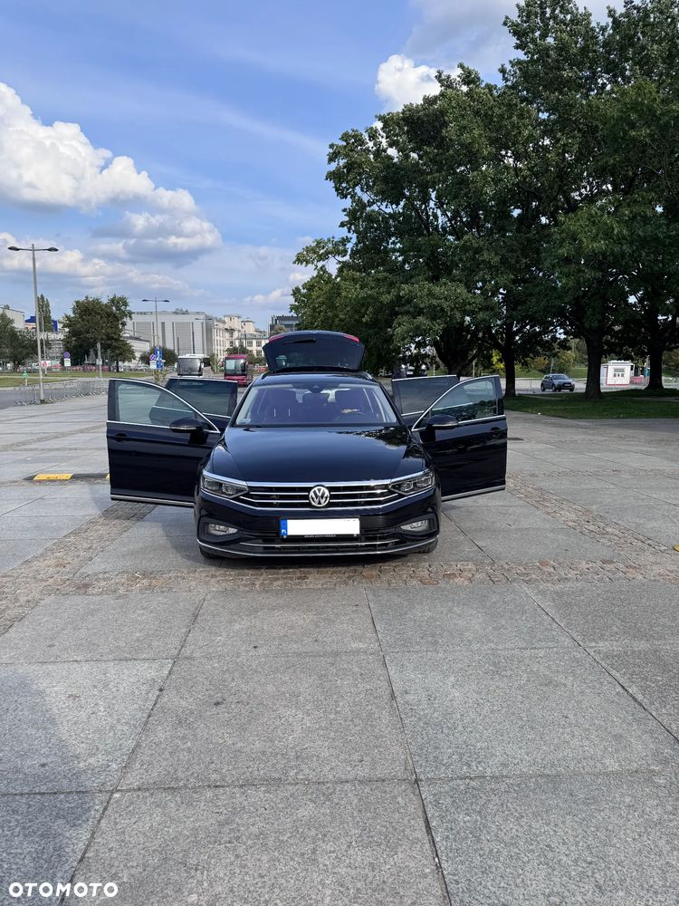
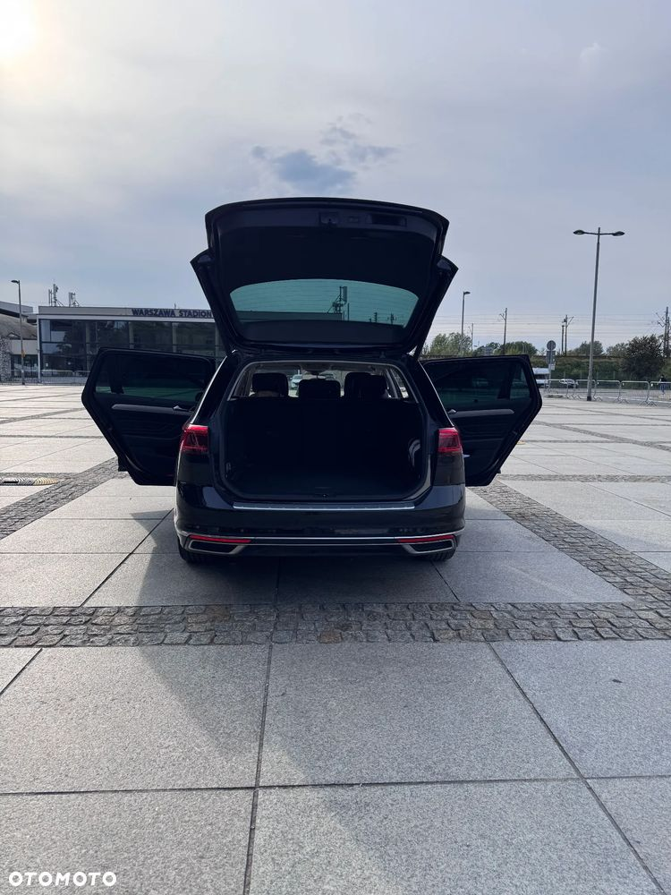
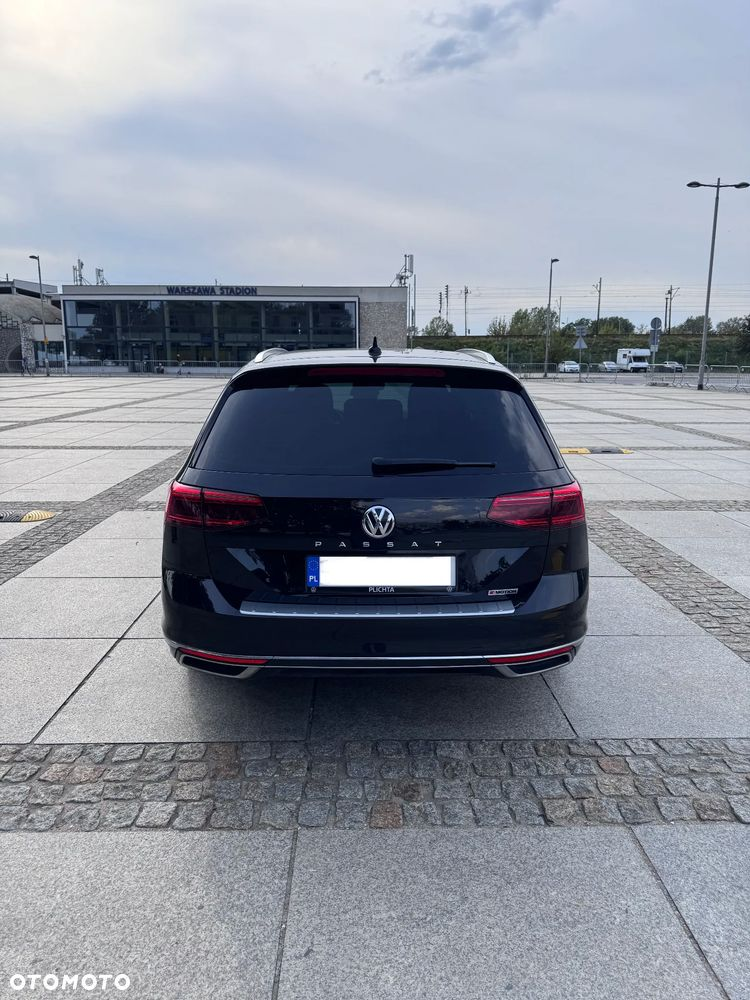
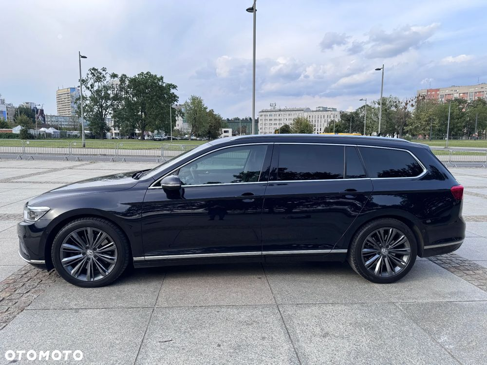
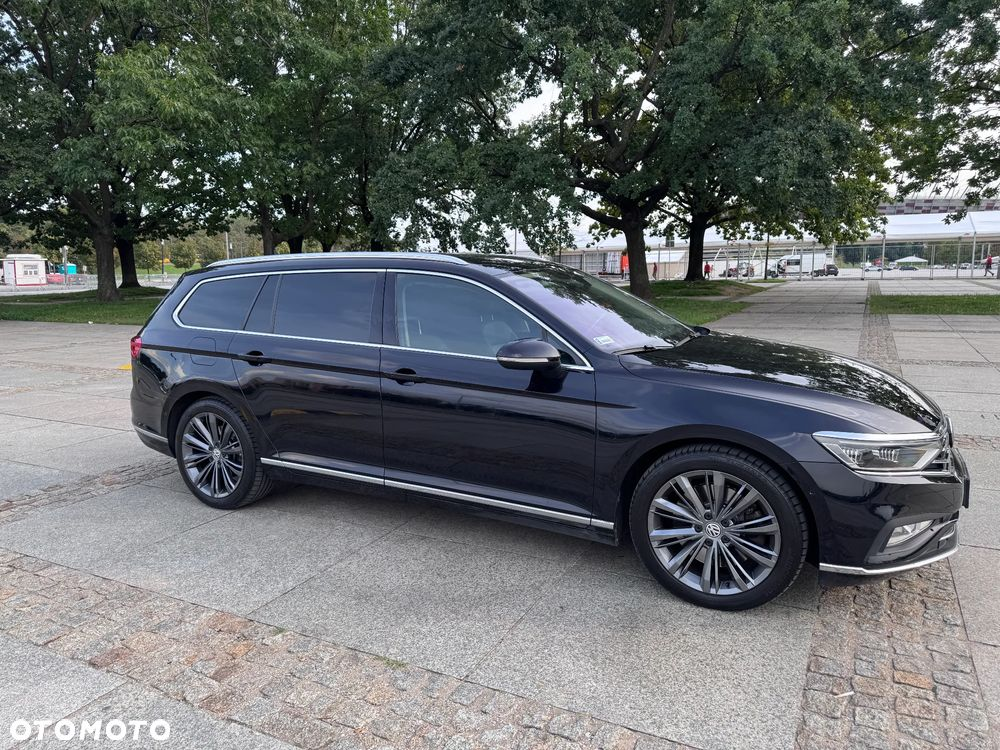
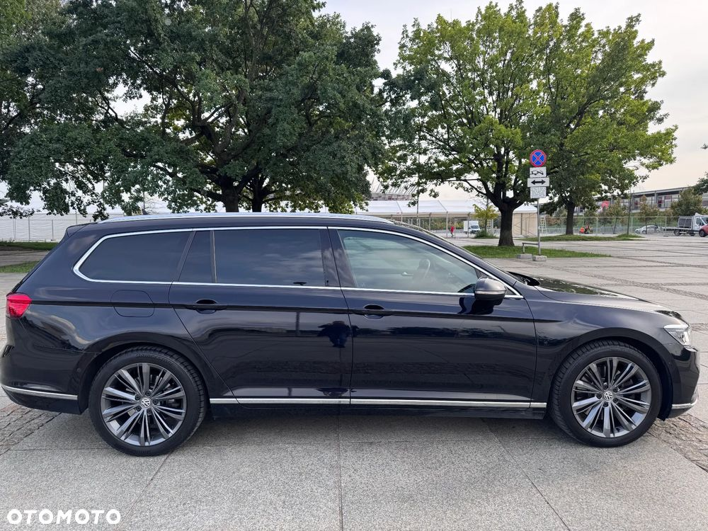
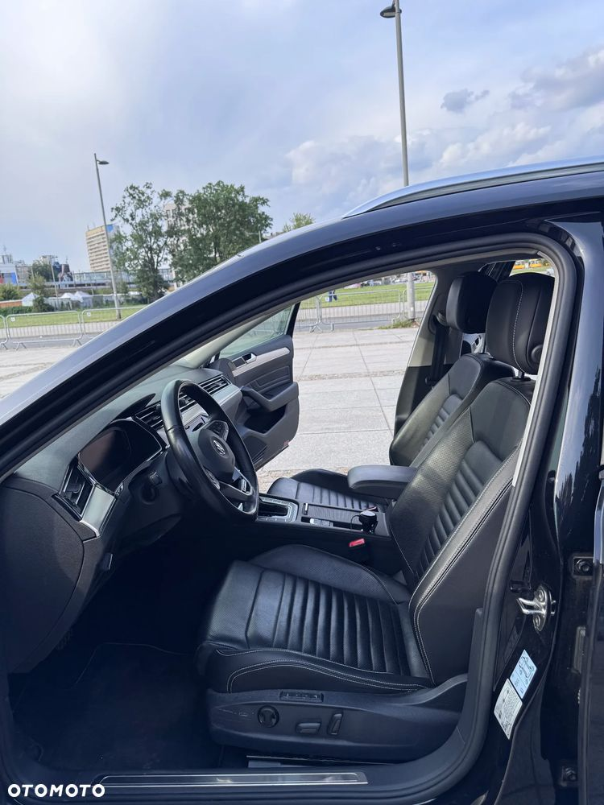
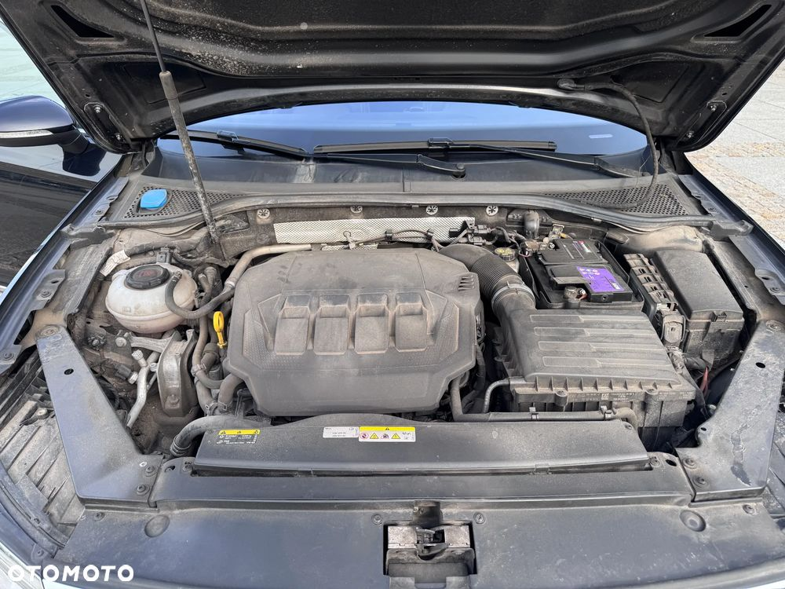
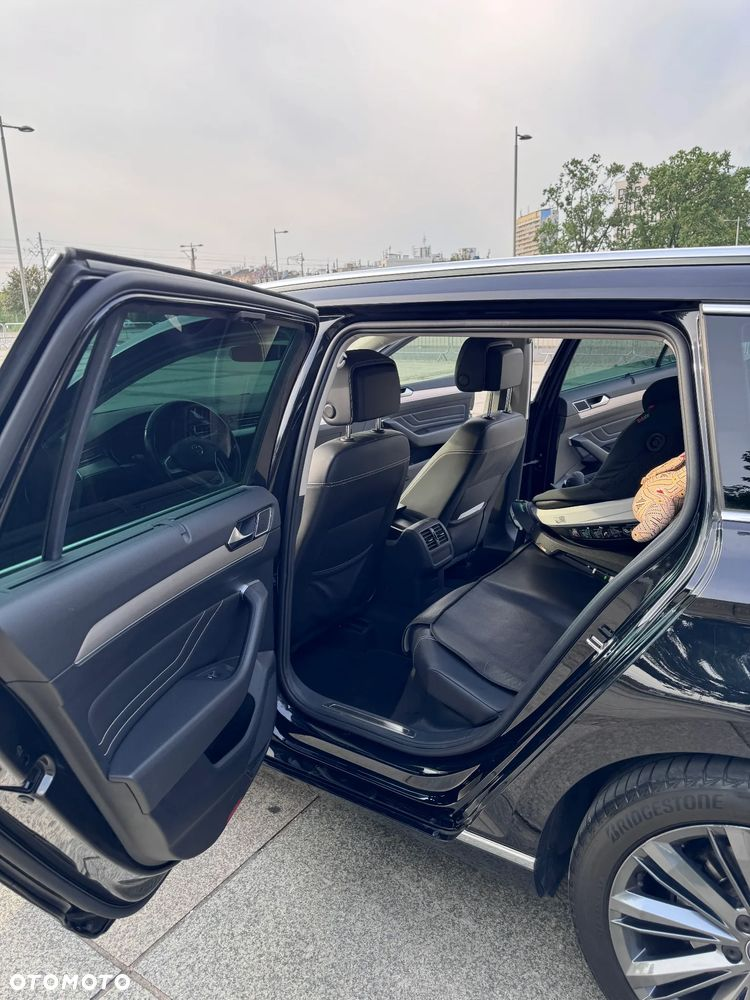
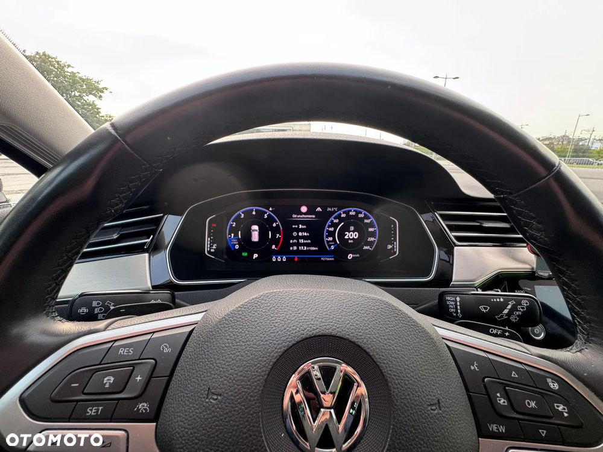